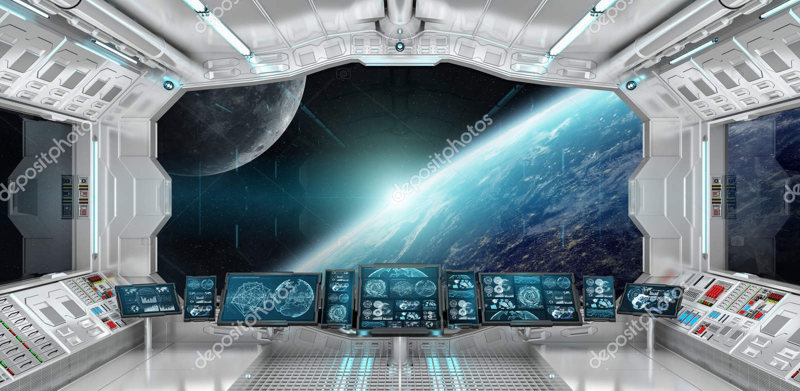
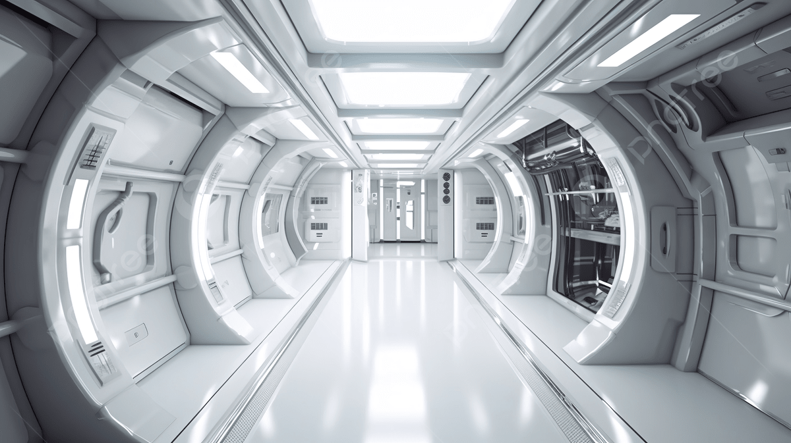

Você desperta em uma sala desconhecida dentro da Estação Nebulosa. As luzes piscam lentamente.
Você examina a sala e encontra um painel quebrado. Nada aqui parece ajudar.

O corredor está silencioso. Duas portas estão destrancadas: uma leva ao Centro de Controle e outra ao Hangar.
No Centro de Controle você vê apenas telas apagadas. Nada funcional. Este caminho não ajuda muito.
Você chega ao Hangar e encontra uma pequena nave ainda ativa. Parece sua chance de escapar.
A nave decola e você finalmente escapa da Estação Nebulosa. Você sobreviveu!